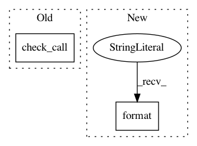

44abac5f9d53b4c55084d438d4cdfa10e5e7fe20,tools/make_examples.py,,,#,52
Before Change
print(msg)
// Run the conversion from .py to rst file
check_call("python ../../tools/ex2rst --project dipy --outdir . .", shell=True)
// added the path so that scripts can import other scripts on the same directory
sys.path.insert(0, os.getcwd())
After Change
print(msg)
// Run the conversion from .py to rst file
check_call("{} ../../tools/ex2rst --project dipy --outdir . .".format(sys.executable), shell=True)
// added the path so that scripts can import other scripts on the same directory
sys.path.insert(0, os.getcwd())
In pattern: SUPERPATTERN
Frequency: 3
Non-data size: 2
Instances
Project Name: nipy/dipy
Commit Name: 44abac5f9d53b4c55084d438d4cdfa10e5e7fe20
Time: 2019-07-22
Author: skab12@gmail.com
File Name: tools/make_examples.py
Class Name:
Method Name:
Project Name: Microsoft/nni
Commit Name: c29a0cc338926fc5cee287bf1f6596dc3094a3a1
Time: 2019-03-25
Author: shinaiyang@pku.edu.cn
File Name: test/remote_docker.py
Class Name:
Method Name: start_container
Project Name: broadinstitute/gtex-pipeline
Commit Name: 97765dcefa668e25dbb48c96b7e99442db524038
Time: 2019-01-14
Author: francois@broadinstitute.org
File Name: rnaseq/src/run_SamToFastq.py
Class Name:
Method Name: